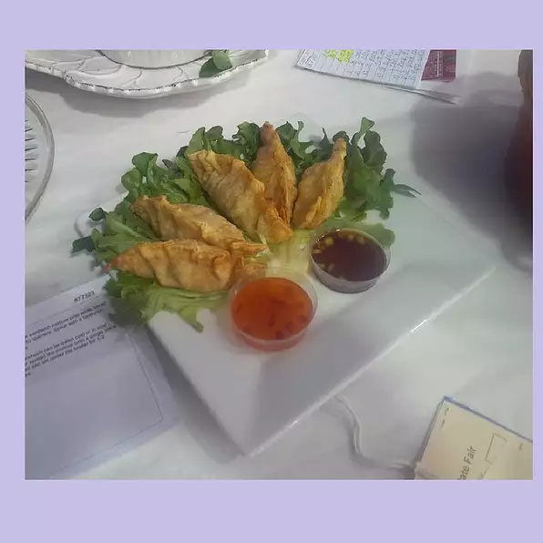

Fried Pork Gyoza

Description
Unsure what to make for dinner? Want to try out something new? Here is a quick and simple recipe
for gyozas. Originating in East Asia, this dish is extra popular during Chinese New Year,
but can be enjoyed year round!
Note: pork can be substituted for chicken, turkey, or any meat of your preference.
Ingredients
Gyoza:
- 4 ounces water chestnuts, drained
- 3 green onions
- 1 egg, lightly beaten
- 2 ounces canned pineapple, drained
- 1 ½ tablespoons gochujang (Korean hot pepper paste)
- ½ tablespoon dried parsley
- 1 teaspoon hoisin sauce
- ½ teaspoon Sriracha sauce
- ½ teaspoon sesame oil
- ¼ teaspoon ground black pepper
- ¼ teaspoon grated fresh ginger
- ¼ teaspoon fish sauce
- 1 (12 ounce) package sausage (such as Old Folks®)
- 2 (12 ounce) packages round gyoza wrappers
Dipping Sauce:
- ½ cup rice vinegar
- ½ cup low-sodium soy sauce
- ⅓ cup thinly sliced green onions
- 1 teaspoon sesame oil
- ½ teaspoon crushed red pepper flakes
- 1 clove garlic, minced
- ½ teaspoon minced fresh ginger root
- vegetable oil for frying
Steps
- Combine water chestnuts, green onions, egg, pineapple, gochujang, parsley, hoisin sauce, Sriracha sauce, sesame oil, black pepper, ginger, and fish sauce in a food processor.
Pulse until finely chopped and well combined. Add sausage and pulse filling until just combined.
- Place 4 gyoza wrappers at a time on a clean, flat surface. Fill a small bowl with water. Add about a 1/2 tablespoon of filling to the center of each wrapper.
Moisten 1/2 the circumference of each wrapper using a wet finger. Quickly fold each wrapper in half and pinch 5 to 6 pleats along the edge to seal. Place filled gyoza on a plate and cover with a moist paper towel to prevent drying out.
Continue with remaining wrappers and filling.
- Whisk rice vinegar, soy sauce, green onions, sesame oil, red pepper flakes, garlic, and ginger root together in a bowl. Allow dipping sauce to sit at least 15 minutes before serving.
- Heat oil in a deep-fryer or large saucepan to 375 degrees F (190 degrees C).
- Fry gyoza 3 or 4 at a time in the hot oil until lightly golden brown, about 3 minutes per batch. Serve immediately with dipping sauce.